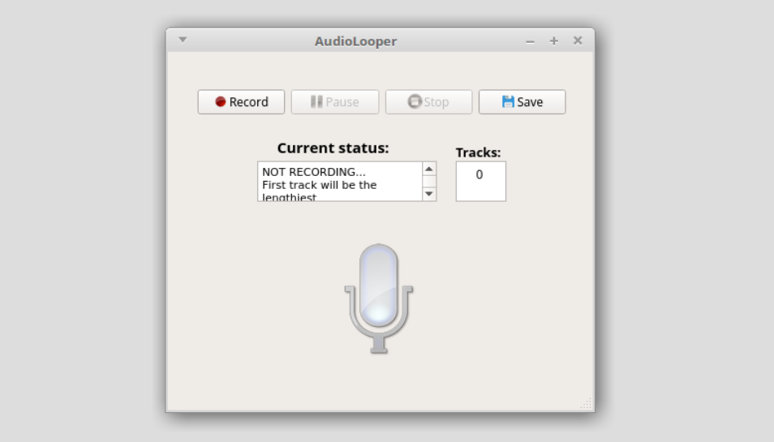

Carlos Eduardo Marciano
Estudante de Engenharia de Computação e Informação
Universidade Federal do Rio de Janeiro – UFRJ
Rio de Janeiro, RJ, Brasil

Minha História
Sou um estudante de anos que teve seu primeiro contato com programação aos 14 desenvolvendo RPGs no Adobe Flash (na já extinta linguagem ActionScript 2.0). Junto com dois amigos artistas que conheci em fórums, um de Nova York e outro de Toronto, criamos mundos que serviriam de base pra alimentar o sonho de seguir uma carreira na área de computação.
Entrei na faculdade em 2015 e, por acaso, puxei uma matéria de algoritmos e estruturas de dados que só deveria ser puxada 2 semestres depois. Curiosamente, foi naquela disciplina até então misteriosa que eu encontraria meu maior interesse na computação. Passei com nota máxima e me tornei monitor da matéria, cargo que ocuparia pelos próximos 2 anos.
Foi em algoritmos que pude ajudar o maior número de pessoas e aprender diversas lições. Apesar de ter sido oferecido um terceiro ano, deixei o cargo ao final de 2017 pra me dedicar à pesquisa. Junto com o professor Vinícius Gusmão, tenho desenvolvido um algoritmo para encontrar "strong double tracings" em grafos, um tema pouco explorado com diversas aplicações urbanas.
Linguagens
Naturais
- Portugês (nativo)
- Inglês (nativo)
- Francês (intermediário)
- Espanhol (básico)
De Programação
- C e C++ (fluente)
- Javascript e JQuery (avançado)
- HTML e CSS (avançado)
- Python e Java (intermediário)
- x86 Assembly (básico)
Alguns Projetos

Issues Monitoring
Sistema construído em equipe para monitoramento de laboratórios da UFRJ. Envolve leituras de Arduinos, uma interface web, um servidor central e um parser para interagir com outro sistema.
Github

AudioLooper++
Software em C++ e Qt utlizando a biblioteca PortAudio para gravar sons e reproduzi-los em loop, um em cima do outro, possibilitando a criação de músicas com vários instrumentos.
GithubConquistas

1º Lugar Engenharia de Computação UFRJ
Classificado em 1º lugar no vestibular do curso com um total de 4035,60 pontos pelo ENEM 2014.